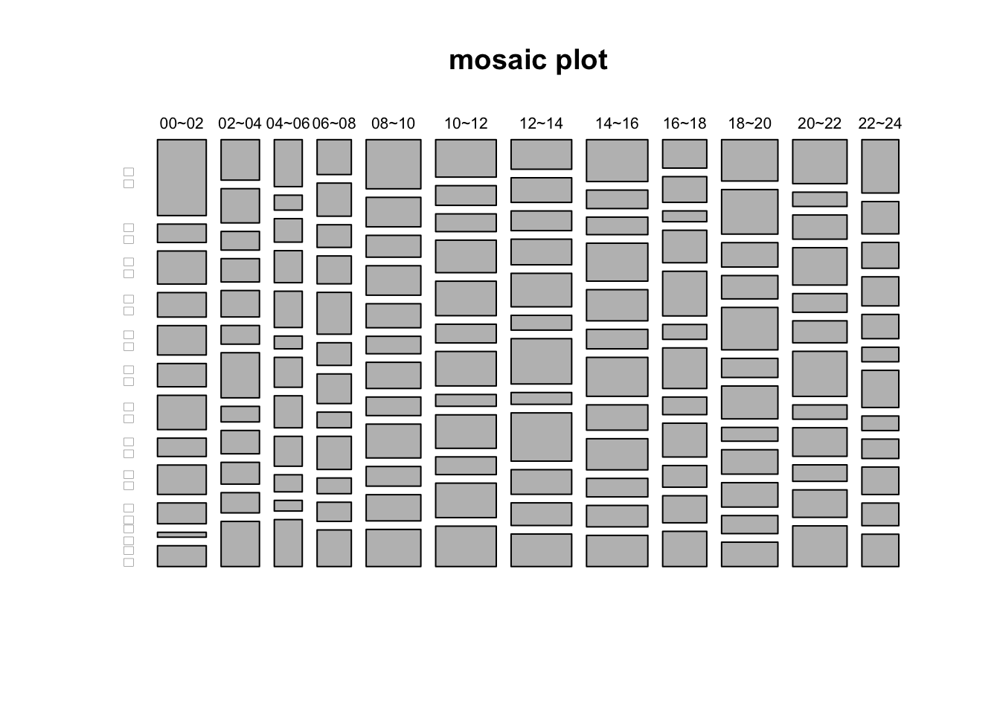

Chapter 5 Counting and Cross-tabulation
交叉分析是一種對兩個或多個變數進行聯合分析的方法，通常用於研究不同類別或組別之間的關係和差異。交叉分析可以幫助我們發現變數之間的相互作用，以及不同類別或組別之間的異同點，進而進行更深入的分析和解釋。
在交叉分析中，通常會使用交叉表（cross tabulation）或稱為列聯表（contingency table）來對變數進行分析。交叉表是一種二維資料表格，其中一個變數作為行標籤，另一個變數作為列標籤，每個資料格中則表示兩個變數的交叉次數或百分比。交叉表可以幫助我們從不同角度瞭解變數之間的關係和差異，例如：
發現變數之間的相關性：可以通過交叉表計算兩個變數之間的相關係數或卡方檢定值，以評估它們之間的相關性程度。
比較不同類別或組別之間的差異：可以通過交叉表比較不同類別或組別之間的差異，例如不同性別、年齡、教育程度、地區等對某一變數的影響。
發現變數之間的交互作用：可以通過交叉表比較不同類別或組別之間的差異，並分析它們之間的交互作用，以進一步瞭解變數之間的關係和影響。
5.1 Taipei Residential Burglary
觀察值、點位資料：公部門所發布的開放資料通常會根據某些類別進行統計，例如年齡、性別、教育程度、地區等等，只有少部分的資料會用觀察值（Observation）的方式來記錄，也就是每一個案例紀錄一筆資料。例如疫情一開始人數還少的時候，會逐一記錄每個個案；地理資訊系統上面記錄某些機構或某些特定地點的時候也是點位資料；或在觀察輿情時，每筆發言或留言都是一筆觀察值。「臺北市住宅竊盜點位資訊」就是逐案紀錄的點位資料。而以下的例子也是點位資料，主要為主要為噪音、竊盜、交通事故等相關點位資料。
- 臺北市街頭隨機強盜案件點位資訊、
- 臺北市街頭隨機搶奪案件點位資訊、
- 臺北市汽車竊盜點位資訊、
- 臺北市機車竊盜點位資訊、
- 臺北市自行車竊盜點位資訊、
- 臺北市道路交通事故斑點圖、
- 臺北市娛樂營業場所噪音告發案件點位資訊、
- 臺北市非營業用卡拉OK噪音告發案件點位資訊、
- 臺北市營建工程噪音告發案件點位資訊等，
5.1.1 讀取檔案
規劃比較完善的開放資料平台會提供API給程式設計者存取，例如臺北資料大平台或內政部開放資料平台。但我們這邊用下載CSV（Common
Separated
Value）檔的方式來讀取這筆資料，以理解CSV這種檔案型態如何儲存資料。首先要至臺北資料大平台上查詢「住宅竊盜」，可以找到臺北市住宅竊盜點位資訊。將該CSV檔下載至個人本機端，置入data
資料夾中，便可以用read.csv()讀取該檔案。或可用tidyverse系列套件中的readr::read_csv()來直接讀取該網址所指到的檔案。
我習慣在Console視窗中用??read_csv()查詢到這些函式的用法。
read.csv()to read csv and convert it to a data.framereadr::read_csv()to read csv or read a csv by an url
如果知道這個套件是readr的話，也可以到右下方的工作區塊找到「Packages」工作視窗，裡面有列出現在載入的所有的套件，也有套件中的所有函式。偶而看一看會發現一些自己平常忽略的好用工具。
library(knitr)
library(kableExtra)
library(tidyverse)
df <- read.csv("data/臺北市住宅竊盜點位資訊-UTF8-BOM-1.csv")
head(df) ## 編號 案類 發生日期 發生時段 發生地點
## 1 1 住宅竊盜 1030623 08~10 臺北市中正區廈門街91~120號
## 2 2 住宅竊盜 1040101 00~02 臺北市文山區萬美里萬寧街1~30號
## 3 3 住宅竊盜 1040101 00~02 臺北市信義區富台里忠孝東路5段295巷6弄1~30號
## 4 4 住宅竊盜 1040101 06~08 臺北市中山區新生北路1段91~120號
## 5 5 住宅竊盜 1040101 10~12 臺北市文山區明興里興隆路4段1~30號
## 6 6 住宅竊盜 1040102 00~02 臺北市士林區天福里1鄰忠誠路2段130巷1~30號用read_csv()來讀取。除了
base套件的read.csv()外，也可使用readr套件的read_csv()函式來讀取，該套件屬於tidyverse套件系的其中一個套件，如果已經有用install.packages("tidyverse")安裝過，只要用library(tidyverse)就可以使用read_csv()函式。在此鼓勵各位使用tidyverse系列套件。普遍來說，read_csv()
的功能和效果都會比read.csv()好，該函式還會自動猜測每個變數的變數型態並直接進行轉換（尤其是有時間欄位的時候，會非常方便）。
萬一遇到中文檔案會有讀檔編碼問題時，有可能該檔案是用big5來儲存的，可以在read_csv()中設定locale來指定讀取的編碼方法。如read_csv(url, locale = locale(encoding = "Big5"))
z
library(readr)
df <- read_csv("data/臺北市住宅竊盜點位資訊-UTF8-BOM-1.csv")
# df <- read_csv("data/臺北市住宅竊盜點位資訊-UTF8-BOM-1.csv", locale = locale(encoding = "Big5"))
head(df)## # A tibble: 6 × 5
## 編號 案類 發生日期 發生時段 發生地點
## <dbl> <chr> <dbl> <chr> <chr>
## 1 1 住宅竊盜 1030623 08~10 臺北市中正區廈門街91~120號
## 2 2 住宅竊盜 1040101 00~02 臺北市文山區萬美里萬寧街1~30號
## 3 3 住宅竊盜 1040101 00~02 臺北市信義區富台里忠孝東路5段295巷6弄1~30號
## 4 4 住宅竊盜 1040101 06~08 臺北市中山區新生北路1段91~120號
## 5 5 住宅竊盜 1040101 10~12 臺北市文山區明興里興隆路4段1~30號
## 6 6 住宅竊盜 1040102 00~02 臺北市士林區天福里1鄰忠誠路2段130巷1~30號5.1.2 萃取所需新變項
該data.frame包含編號、案類、發生日期、發生時段、發生地點五個變項。其中比較有意義的應該是發生日期、發生時段和發生地點。然而，發生地點幾乎是完整地址，除非要繪製發生的地圖點位地圖，才會需要近乎完整的地址。假設我們的目標是抽取出台北市的「行政區」，發生地點的格式還蠻一致的如「臺北市中正區廈門街91~120號」。因此，我們只要抽出發生地點的第4至6個字即可。
從一個字串中抽取出第n個字到第m個字，要用substr()或stringr套件的str_sub()。可以用?substr或?str_sub查詢help中的相關用法。在此
- 我將中文變數
現在時間的資料指給一個新的英文變項time。 - 從變數
發生地點，用substr()取出行政區（region） - 或用
stringr::str_sub() ?substr查詢其用法和意義。相當於getting sub string since x to y。
# Get substring of var "發生時段" and assign to a new time var
df$time <- df$發生時段
# Get substring of var "發生地點" and assign to a new region var
df$region <- substr(df$發生地點, 4, 5)
head(df)## # A tibble: 6 × 7
## 編號 案類 發生日期 發生時段 發生地點 time region
## <dbl> <chr> <dbl> <chr> <chr> <chr> <chr>
## 1 1 住宅竊盜 1030623 08~10 臺北市中正區廈門街91~120號 08~10 中正
## 2 2 住宅竊盜 1040101 00~02 臺北市文山區萬美里萬寧街1~30號 00~02 文山
## 3 3 住宅竊盜 1040101 00~02 臺北市信義區富台里忠孝東路5段29… 00~02 信義
## 4 4 住宅竊盜 1040101 06~08 臺北市中山區新生北路1段91~120號 06~08 中山
## 5 5 住宅竊盜 1040101 10~12 臺北市文山區明興里興隆路4段1~30… 10~12 文山
## 6 6 住宅竊盜 1040102 00~02 臺北市士林區天福里1鄰忠誠路2段1… 00~02 士林5.1.3 使用table()計數
清理完資料後，我們要回答的第一個數據問題通常是「那XXX的案例有幾個？」例如：大安區有多少竊盜案？10~12這個時段有多少案例。
table()函式可以對Vector中的值進行計數（Counting）。table(df$time)
相當於去計數不同的時間區間出現多少起案例；table(df$region)
相當於去計數不同地區各出現多少起案例。
提示：可以用class(tb_1) 觀察用table()
計數後所產生的資料型態（table）。
## table
# counting the frequency of region variable
(table(df$region))##
## 中山 中正 信義 內湖 北投 南港 士林 大同 大安 文山 松山 萬華
## 438 263 214 303 318 181 373 172 311 204 220 350# counting the frequency of time variable
(tb_1 <- table(df$time)) ##
## 00~02 02~04 03~05 04~06 05~07 06~08 08~10 09~11 10~12 11~03 11~13 12~14 12~15
## 272 214 8 156 23 191 305 6 338 1 26 338 2
## 14~16 15~17 15~18 16~18 17~19 18~20 18~21 19~21 20~22 21~23 21~24 22~24 23~01
## 342 3 1 246 21 314 1 4 303 5 1 206 20class(tb_1) ## [1] "table"5.1.4 依變數值篩選資料
該項竊盜案資料整理時經常不慎用不同的時間區間來標記，有時候也會不小心把新北市的資料給那進來，所以需要做資料篩選。從各個時間區間的竊盜案出現次數來觀察，有少數的案件出現在奇數的時間區間如09~11或12~15等等需要篩除；從各個行政區的竊盜案出現次數來觀察，確實都是台北市的竊盜案。
接下來要用base套件的R，根據某個變數值（例如上述的時間）來篩出符合條件的資料，或者篩去不符合條件的資料。其語法是要在df[ , ]逗號前加上篩選的條件，也就是對資料列進行篩選，篩出或篩除都是以整列為單位。在此的條件是df$time在00~02、02~04、…之間；或者是df$time不在03~05、05~07、…之間。表示法分別如下：
df$time %in% c("00~02", "02~04", "04~6",...)
!df$time %in% c("03~05", "05~07", ...)%in%表示的是左方df$time的值是否是右方Vector中的其中一個如果要表示不包含，就在
df%time加一個NOT，也就是!。
依照各組時間的案例個數統計後，篩除資料未足100的時間區間如下，最後再用table(df$time)
計算一次，發現每個時段都兩三、百個案例，且涵蓋整日的時間。清理後沒有重疊的時間區間，做類別資料分析會比較準確。
# filter out irrelevant timestamp
df <- df[!df$time %in% c("03~05", "05~07", "09~11", "11~13", "11~03", "12~15", "15~17", "15~18", "17~19", "18~21", "19~21", "21~23", "21~24", "23~01"), ]
table(df$time)##
## 00~02 02~04 04~06 06~08 08~10 10~12 12~14 14~16 16~18 18~20 20~22 22~24
## 272 214 156 191 305 338 338 342 246 314 303 206# filter out irrelevant region(area)
# df <- df[!df$region %in% c("三重", "中和", "淡水", "板橋"), ]5.1.5 做雙變數樞紐分析：table()
類別變項分析通常是要考驗兩個變項間的關係，從上述的計數中，我可以看見不同行政區或者不同時間的竊盜案數量，但我進一步想知道，那不同行政區的竊盜案常發生時間是否不同？這時後就要做時間和行政區的交叉分析。我們同樣可以用table()和tapply()來做兩個變項的交叉分析，寫法如下。
用table()來交叉分析的結果如下，所得到的結果之變數型態仍是table型態。
# Tabulating time and region variables
(res_table <- table(df$time, df$region))##
## 中山 中正 信義 內湖 北投 南港 士林 大同 大安 文山 松山 萬華
## 00~02 62 15 27 20 24 19 28 15 24 17 4 17
## 02~04 26 22 12 15 17 12 29 10 15 14 13 29
## 04~06 22 7 11 15 17 6 14 15 14 8 5 22
## 06~08 20 19 13 16 24 13 17 9 19 9 11 21
## 08~10 45 27 20 27 22 16 24 17 31 18 24 34
## 10~12 38 20 18 33 35 19 35 12 34 18 35 41
## 12~14 30 25 20 26 34 15 46 12 49 25 23 33
## 14~16 43 19 18 39 32 20 40 26 32 19 22 32
## 16~18 21 19 8 24 33 11 30 13 25 16 20 26
## 18~20 39 42 23 22 40 18 31 13 23 23 17 23
## 20~22 40 13 22 34 17 20 41 13 26 15 25 37
## 22~24 33 20 16 18 15 9 23 9 12 17 14 20# Checking it class and its content
class(res_table)## [1] "table"## [1] "table"5.1.6 繪圖
通常這種類別資料交叉分析最常用的圖表型態之一便是Mosaic
Plot（但事實上Mosaic
Plot不見能夠被一眼就了解）。我們可以把交叉分析後的變項res_table直接用MosaicPlot來繪圖。
# mosaicplot() to plot 2-dim categorical vars.
mosaicplot(res_table)
# Add argument main (figure title)
mosaicplot(res_table, main="mosaic plot")
5.1.6.1 解決圖表無法顯示中文
大部分的視覺化套件都無法順利顯示中文，除非特別指定所要用的中文字型。這方面網路上可以找到很多的說明，但非常討厭的是，幾乎每換一套視覺化工具，換一套語言，就有不同的中文字體指定方式。例如用base的plot()來繪圖或用ggplot()的中文字型指定方法便不同，且軸上面有中文、圖標有中文、或者圖內有中文都要分開指定，非常討人厭。
Mosaic Plot屬於base
R的plot()，其中文指定方法要指定在繪圖前的par()函式中（par為parameter的意思），指定方法為par(family=('Heiti TC Light'))，Heiti
TC
Light為字體名稱，為OSX上在用的黑體細字，STKaiti則為標楷體。然後，par()和mosaicplot()兩個函式要「同時執行」，也就是請你直接用shift-cmd(ctrl)-Enter執行整個code-cell，或者將該兩個函式選起來一次執行。
par(family=('STKaiti'))
# par(family=('Heiti TC Light'))
mosaicplot(res_table, main="mosaic plot", color=T)
5.1.6.2 自訂顏色
目前顏色實在過醜，你可以自訂顏色指給mosaicplot()。例如我底下便產製了12種顏色後，將其作為mosaicplot()的參數
# Set up color by yourself.
colors <- c('#D0104C', '#DB4D6D', '#E83015', '#F75C2F',
'#E79460', '#E98B2A', '#9B6E23', '#F7C242',
'#BEC23F', '#90B44B', '#66BAB7', '#1E88A8')
# par(family=('STKaiti'))
par(family=('Heiti TC Light'))
mosaicplot(res_table, color=colors, border=0, off = 3,
main="Theft rate of Taipei city (region by hour)")
5.2 Read online files
方法一：直接依資料網址讀取檔案。現在的程式語言所設計的讀取檔案函式通常會允許使用者直接讀取資料所在的URL。所以，我們可以直接從網路上載入台北市竊盜案資料。首先要至臺北資料大平台上查詢「住宅竊盜」，可以找到臺北市住宅竊盜點位資訊，點選後對右上方的下載按右鍵可取得鏈結到該資料的URL（如https://data.taipei/api/getDatasetInfo/downloadResource?id=68785231-d6c5-47a1-b001-77eec70bec02&rid=93d9bc2d-af08-4db7-a56b-9f0a49226fa3）。
由於該資料網址似非永久網址，故本範例並未執行以下程式碼，僅提供範例程式碼讓個人替換網址來做測試。
方法二：用R程式將該網址的檔案抓回本機端儲存。部分Mac電腦無法使用read.csv()從網路上取得資料又轉為data.frame，一個可行的辦法是先用GET(url,write_disk("data/tptheft.csv"))將其取回並命名為data/tptheft.csv，之後再用df <- read.csv("data/tptheft.csv")直接讀取該檔案。
GET(url, write_disk("data/tptheft.csv", overwrite = TRUE))
df <- read.csv("data/tptheft.csv")5.3 Counting Review
5.3.1 tapply()
我們也可用tapply()
函式來達到一樣的目的。Apply家族的函式都是，針對某個資料，將某個函式套用到某個物件上。tapply()
即是用來做計數的，tapply(df$編號, df$time, length)有三個輸入，第一個輸入為整體物件，第二個輸入為要據以彙整的變項，在此為df$time，第三個是要用來彙整的函式，因為這裡要做計數，所以要用length函式。
註：同樣用class()來觀察彙整後的資料型態為array，和前者的table資料型態不同。
5.3.2 tapply() two variables
用tapply()來做兩個變數交叉分析的語法如下，必須要把兩個Vector包在一個list()中。其他不變。兩個變項用tapply()交叉分析後的結果，變數型態會變成matrix。前者用table()來交叉分析的仍是table型態。
res_tapply## 中山 中正 信義 內湖 北投 南港 士林 大同 大安 文山 松山 萬華
## 00~02 62 15 27 20 24 19 28 15 24 17 4 17
## 02~04 26 22 12 15 17 12 29 10 15 14 13 29
## 04~06 22 7 11 15 17 6 14 15 14 8 5 22
## 06~08 20 19 13 16 24 13 17 9 19 9 11 21
## 08~10 45 27 20 27 22 16 24 17 31 18 24 34
## 10~12 38 20 18 33 35 19 35 12 34 18 35 41
## 12~14 30 25 20 26 34 15 46 12 49 25 23 33
## 14~16 43 19 18 39 32 20 40 26 32 19 22 32
## 16~18 21 19 8 24 33 11 30 13 25 16 20 26
## 18~20 39 42 23 22 40 18 31 13 23 23 17 23
## 20~22 40 13 22 34 17 20 41 13 26 15 25 37
## 22~24 33 20 16 18 15 9 23 9 12 17 14 20# View(res)5.3.3 dplyr::count() two variables
這邊多介紹一個用dplyr套件的count()函式來做交叉分析的方法（未來會常用這個方法，因為dplyr是tidyverse系列套件的核心套件。dplyr的函式第一個參數永遠是該data.frame，
例如count()；後面time與region則是這個data.frame中的兩個變項。不像tapply()或table()的結果一樣，欄與列分別為time與region，count()出來的結果會有兩個變項分別是指定要計數的time與region
，且會新增一個變項n，代表這組數據（time x
region）共有幾個。這種表達型態通常稱為long-table（長表）、而tapply()或table()
的結果通常稱為wide-table（寬表）為典型的交叉分析表。
目前大部分的類別資料分析還是會採用交叉分析表的型態，但未來我們要用tidyverse系列套件做大量的數據彙整或視覺化時，都會盡可能想辦法轉為Long-table型態，讓每一欄剛好就是一個變項。只要是tidyverse系列套件所計算出來的資料型態幾乎都是類似data.frame的型態，例如觀察count的結果便是"tbl_df" "tbl" "data.frame"。
5.4 Pivoting long-wide tables
5.4.1 long-to-wide
那長表列可以轉為寬表嗎？可以，tidyverse系列套件中的tidyr套件有個函式spread()可以接著把某個變項展開為欄。例如原本上述的列是時間與行政區的交叉組合，但我可以把行政區展開為欄、或者把時間展開為欄
。如下例，spread(res_count, region, n, fill = 0)
有四個參數，遵循tidyverse系列套件的規則，第一個位置為data.frame，第二個參數則是要被展開至欄的變項這裡為region，第三個參數則是因應region被展開後，那中間交叉分析的數值就是n，最後一個參數是避免spread時有些交叉組是沒有資料的，因此fill=0可以指定，如果某個time
x
region的交叉組別是沒資料的，就填上0，也有可能是用fill=NA填上NA。以下的例子中也提供了將time
展開至欄的寫法供參考。
現在spread()函式已經被新的函式取代，為pivot_wider()。spread(res_count, region, n, fill = 0)
在此需要改寫為pivot_wider(res_count, names_from = region, values_from = n, values_fill = 0)。大致上和spread()用法是一樣的，只是要寫清楚，哪個變數要給哪一個參數。
展開後的資料型態和前者計數後的資料型態一樣，都是"tbl_df" "tbl" "data.frame"。這是為什麼tidyverse系列的套件逐漸變成R的顯學的原因之一。
library(tidyr)
# spreading the region into columns
# (res_count_spread <- spread(res_count, region, n, fill = 0))
res_count_spread <- pivot_wider(res_count, names_from = region, values_from = n, values_fill = 0)
class(res_count_spread)## [1] "tbl_df" "tbl" "data.frame"# spreading the time into columns
# res_count_spread <- spread(res_count, time, n, fill = 0)
res_count_spread## # A tibble: 12 × 13
## time 中山 中正 信義 內湖 北投 南港 士林 大同 大安 文山 松山 萬華
## <chr> <int> <int> <int> <int> <int> <int> <int> <int> <int> <int> <int> <int>
## 1 00~02 62 15 27 20 24 19 28 15 24 17 4 17
## 2 02~04 26 22 12 15 17 12 29 10 15 14 13 29
## 3 04~06 22 7 11 15 17 6 14 15 14 8 5 22
## 4 06~08 20 19 13 16 24 13 17 9 19 9 11 21
## 5 08~10 45 27 20 27 22 16 24 17 31 18 24 34
## 6 10~12 38 20 18 33 35 19 35 12 34 18 35 41
## 7 12~14 30 25 20 26 34 15 46 12 49 25 23 33
## 8 14~16 43 19 18 39 32 20 40 26 32 19 22 32
## 9 16~18 21 19 8 24 33 11 30 13 25 16 20 26
## 10 18~20 39 42 23 22 40 18 31 13 23 23 17 23
## 11 20~22 40 13 22 34 17 20 41 13 26 15 25 37
## 12 22~24 33 20 16 18 15 9 23 9 12 17 14 20# ??dplyr::count5.4.2 Wide-to-long
寬表格亦可用tidyr的gather()函式轉回長表格型態。但gather()近期也已經被新的函式pivot_longer()取代。原先的gather(res_count_spread, region, n, -time)應取代為pivot_longer(res_count_spread, -time, names_to = "region", values_to = "n")。
# (long_table <- tidyr::gather(res_count_spread, region, n, -time))
long_table <- pivot_longer(res_count_spread, -time, names_to = "region", values_to = "n")5.5 Residuals analysis
mosaicplot()有幾個參數可以用，包含off與shade可用於呈現殘差分析。
- off: vector of offsets to determine percentage spacing at each level of the mosaic (appropriate values are between 0 and 20, and the default is 20 times the number of splits for 2-dimensional tables, and 10 otherwise). Rescaled to maximally 50, and recycled if necessary.
- shade: a logical indicating whether to produce extended mosaic plots, or a numeric vector of at most 5 distinct positive numbers giving the absolute values of the cut points for the residuals. By default, shade is FALSE, and simple mosaics are created. Using shade = TRUE cuts absolute values at 2 and 4.
# par(family=('STKaiti'))
par(family=('Heiti TC Light'))
mosaicplot(res_table, color=T, shade = T, border=0, off = 3,
main="Theft rate of Taipei city (region by hour)")